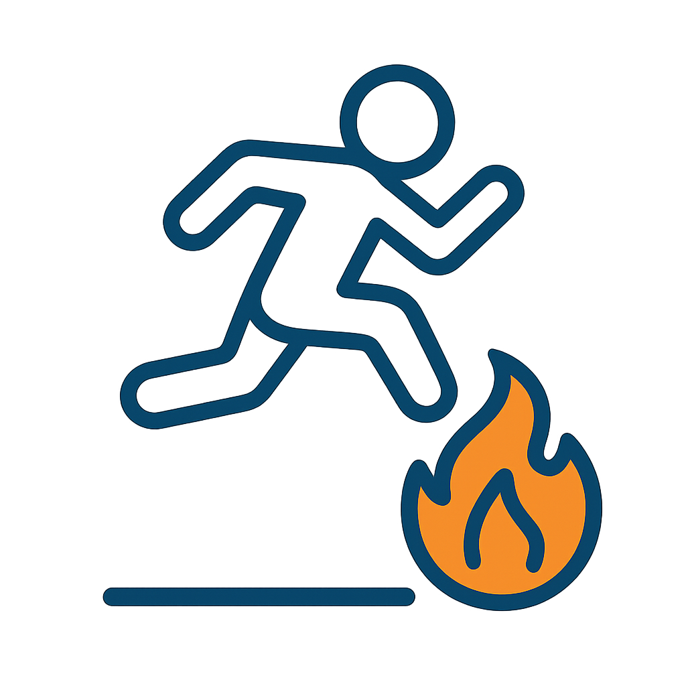
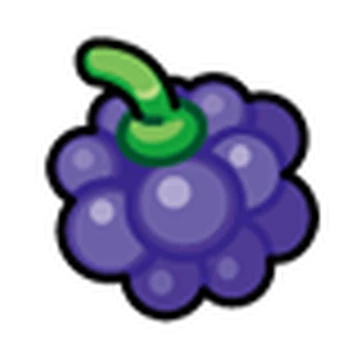

Como Jogar
1. Inicie o Jogo
Clique em Jogar na tela inicial, logo após selecione a dificuldade e clique em Começar para começar o jogo.
2. Pule as Bolas de Fogo
Pressione a tecla Espaço para pular e evitar o fogo.
3. Pegue as Berries
Coletando as berries durante o jogo você acumula pontos e os multiplica a cada berry que você coletar, tendo uma melhor pontuação.
4. Sobreviva Até o Final
Evite os todas as bolas de fogo até o tempo acabar e capture o Pokémon !